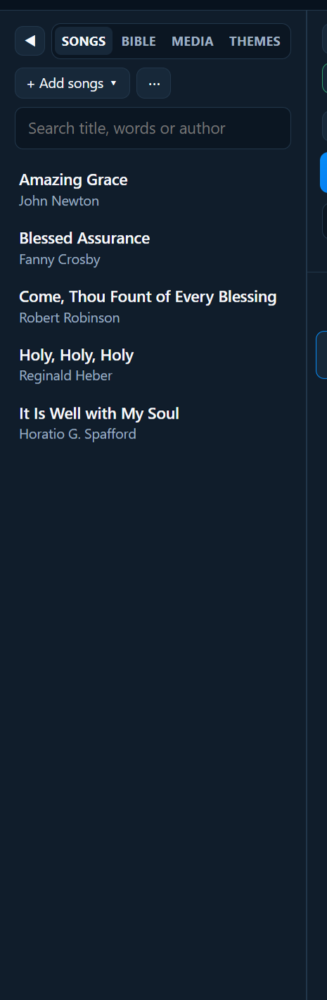
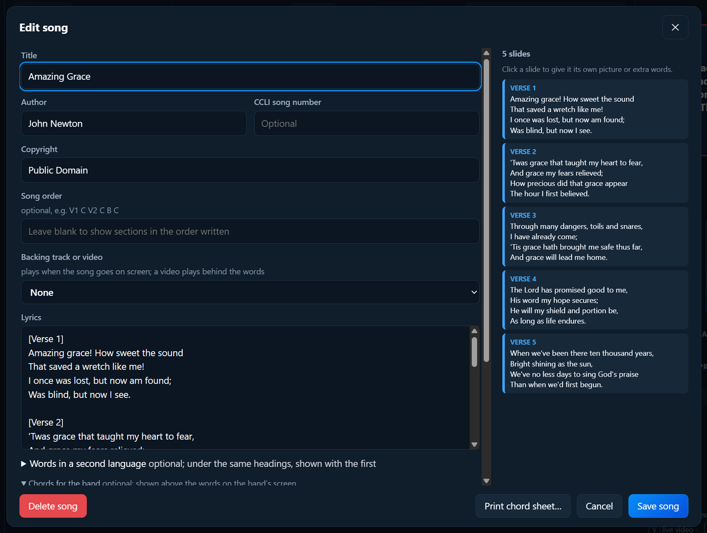

Preparar un culto
Canciones
Tus canciones están en la pestaña Canciones, a la izquierda. PraiseAV trae algunos himnos conocidos (en español, ¡Santo! ¡Santo! ¡Santo!, Castillo fuerte es nuestro Dios y Noche de paz, en las traducciones de dominio público de Juan Bautista Cabrera y Federico Fliedner), y puedes traer los tuyos desde SongSelect, un PDF de acordes, EasyWorship, OpenLP, ProPresenter, MediaShout, VideoPsalm, OpenSong o un archivo de texto.

Buscar una canción
Escribe en el cuadro de búsqueda unas palabras del título, de la letra o del autor. No hace falta que sea el principio del título: «saved a wretch» encuentra Amazing Grace.
Añadir una canción al culto
De cualquiera de estas formas:
- Haz doble clic en la canción.
- Pon el ratón encima de la canción y haz clic en +.
- Arrástrala al culto, al sitio que quieras.
Los elementos nuevos van justo después de lo que esté seleccionado en el culto.
Crear una canción nueva, o cambiar una
Haz clic en + Añadir canciones › Canción nueva… (arriba en la pestaña Canciones), o selecciona una canción en el culto y haz clic en Editar canción encima de sus diapositivas. También puedes poner el ratón encima de una canción de la lista y hacer clic en ✎.

| Cuadro | Qué poner |
|---|---|
| Título | El nombre de la canción |
| Autor | Quién la escribió (sale en pequeño en la primera diapositiva) |
| Número CCLI de la canción | De SongSelect o del cancionero. Hace falta para tu informe de CCLI. |
| Copyright | Por ejemplo «Dominio público» o «© 2019 Editorial» |
| Orden de la canción | Opcional. El orden en que se cantan las partes, por ejemplo E1 C E2 C P C. Déjalo en blanco para seguir el orden escrito. |
| Pista de acompañamiento o vídeo | Opcional. Música, o un vídeo que se reproduce detrás de la letra, cuando la canción sale en pantalla. Mira Música y audio. |
| Letra | La letra (mira abajo) |
Escribir la letra
- Pon el nombre de cada parte entre corchetes en su propia línea:
[Estrofa 1],[Coro],[Puente],[Precoro],[Final]. Los nombres en inglés ([Verse 1],[Chorus]…) también valen. - Una línea en blanco empieza una diapositiva nueva dentro de una parte.
- Las partes largas se dividen solas en diapositivas de unas cuatro líneas, de forma equilibrada.
[Estrofa 1]
Amazing grace! How sweet the sound
That saved a wretch like me!
[Coro]
...La vista previa de la derecha muestra las diapositivas mientras escribes. Haz clic en Guardar canción.
Otra imagen para una estrofa o el coro
Casi siempre una canción mantiene el mismo aspecto de principio a fin (su tema). Pero puedes poner una estrofa, o el coro, sobre una imagen propia, y añadir unas palabras extra a una diapositiva, como Cambio de tono o Solo hombres.
- En la ventana de la canción, haz clic en la diapositiva de la vista previa de la derecha. Se abre debajo.
- Imagen detrás de la letra: elige una imagen o un vídeo de tu pestaña Medios. Elige El fondo habitual de la canción para volver.
- Texto extra (opcional): escribe unas palabras y elige Arriba o Abajo. Salen más pequeñas que la letra de la canción, con la misma letra.
- La imagen pequeña debajo de la diapositiva muestra cómo se verá. Haz clic en Guardar canción.
Si una parte tiene más de una diapositiva, elige Todo el Coro (todas sus diapositivas) o Solo esta diapositiva. Con un orden como E1 C E2 C, el coro muestra su imagen cada vez que vuelve.
Las demás diapositivas mantienen el aspecto habitual de la canción. En el culto, las diapositivas con su propia imagen o texto extra lo muestran en su tarjeta, y la pantalla de la congregación cambia solo en esas diapositivas.
- Las imágenes tienen que estar en la pestaña Medios. Un culto guardado las apunta, para que puedas llevarlas a otro ordenador.
- Si la canción reproduce su propio vídeo detrás de la letra (un vídeo de acompañamiento), o su tema reproduce un vídeo con sonido, ese vídeo se queda, para que la música no se corte. La imagen propia de la diapositiva sale cuando el vídeo está desactivado en el culto.
- Para hacer una diapositiva entera a mano, con imágenes y cuadros de texto donde quieras, usa el diseñador de diapositivas.
Una canción en dos idiomas
Para una iglesia que canta en dos idiomas, una canción puede mostrar los dos en la misma diapositiva: el segundo debajo del primero, más pequeño y en otro color.
- En la ventana de la canción, abre Letra en un segundo idioma.
- Haz clic en Copiar los títulos: se ponen los títulos del primer idioma ([Estrofa 1], [Coro]…), así que solo escribes la traducción debajo de cada uno.
- Escribe o pega la traducción, con una línea en blanco donde el primer idioma tiene una. Haz clic en Guardar canción.
La vista previa de la derecha muestra cada diapositiva con su traducción. PraiseAV las empareja sección por sección, así que una estrofa que ocupa dos diapositivas en un idioma ocupa dos en el otro. También sirven títulos en el segundo idioma ([Verse 1] con [Estrofa 1]): la segunda sección va con la segunda.
Qué idiomas se muestran:
- Mostrar el segundo idioma (en la ventana de la canción): desmárcalo para guardar la traducción sin mostrarla.
- Segundos idiomas (en la columna del culto, debajo de las horas): desmárcalo para un culto en un solo idioma. Así cada canción muestra solo su primer idioma.
- Idiomas (en la columna de diapositivas, para una canción de este culto): los dos, solo el primero o solo el segundo. Esto manda sobre lo anterior, incluso con la canción en pantalla.
La pantalla de la congregación, la transmisión (a pantalla completa) y la letra en los teléfonos muestran los dos idiomas. La pantalla de la banda muestra el primer idioma, con sus acordes. Cómo se ve el segundo idioma (debajo del primero o línea a línea, su tamaño, color y cursiva) es parte del tema.
Las canciones de OpenLP o de archivos OpenLyrics que tienen un segundo idioma lo conservan.
Acordes para la banda
Haz clic en Acordes para la banda en la ventana de la canción para añadir acordes. Hay dos formas.
Pega una hoja de acordes. Casi todas las bandas tienen ya los acordes en su propia línea encima de la letra, de una web, un documento o sus propias notas:
Verse 1
G G7 C G
Amazing grace! How sweet the sound
D
That saved a wretch like me!Cópiala y pégala en el cuadro de acordes. PraiseAV pone cada acorde dentro de la letra, justo antes de la letra sobre la que estaba, y verás esto:
{comment: Verse 1}
[G]Amazing [G7]grace! How [C]sweet the [G]sound
That saved a wretch like [D]me!Los encabezados como Verse 1, Coro: o [Coro] pasan a ser líneas {comment: …}, y una línea de acordes sin letra debajo (una introducción, por ejemplo) se queda como está. Una hoja de acordes que escribas tú se pone en la letra de la misma forma al salir del cuadro.
O empieza desde la letra. Haz clic en Empezar desde la letra para copiar la letra de la canción en el cuadro de acordes, y luego escribe cada acorde entre corchetes justo antes de la palabra (o sílaba) sobre la que va: [G]Amazing [G7]grace. Si el cuadro ya tiene acordes, PraiseAV pregunta antes de cambiarlos.
¿Acordes solo en la primera estrofa? Los himnarios suelen imprimir los acordes sobre la primera estrofa y no en las demás, porque todas tienen la misma melodía. Puedes hacer lo mismo: si una estrofa no tiene acordes propios (y tiene el mismo número de líneas que la primera), la pantalla de la banda le pone encima los acordes de la primera estrofa, cada uno en la palabra que ocupa el mismo sitio en la línea. Revísalo una vez, porque la letra de las demás estrofas no siempre cae exactamente en los mismos sitios; dale a una estrofa sus propios acordes para cambiar alguno.
Tócala en otro tono. Si una canción queda demasiado alta o baja para quienes cantan, usa La banda la toca en, justo encima del cuadro de acordes. + Subir sube todos los acordes medio tono y − Bajar los baja; o elige un tono de la lista (el tono en que están escritos los acordes dice como está escrita). Debajo del cuadro de acordes ves los acordes como los mostrará la pantalla de la banda: Amazing Grace, escrita en G y tocada en A, muestra [A]Amazing [A7]grace. PraiseAV los escribe como los tendría una hoja de acordes en ese tono (Bb, no A#), y un acorde con bajo mueve las dos notas, así que D/F# pasa a ser E/G#.
Los acordes del cuadro se quedan como estaban escritos, así que sigue escribiéndolos o cambiándolos en ese tono. El tono que elijas se guarda con la canción: la próxima vez sale en el último tono que usaste, también en los cultos guardados y en la carpeta de canciones compartida. Para volver, haz clic en Volver a G (o el tono en que esté escrita).
Una cejilla para las guitarras. Elige Cejilla para guitarras para poner la cejilla en un traste. Cada opción dice qué posiciones toca entonces la guitarra: para una canción tocada en A, Cejilla 2: posiciones de G. La pantalla de la banda muestra entonces esas posiciones, con cejilla 2, posiciones de G (suena en A) encima de la letra, para que quien toca el teclado sepa que la canción está en realidad en A. El tono y la cejilla aparecen como líneas {transpose: 2} y {capo: 2} arriba en el cuadro de acordes.
Los acordes salen entonces encima de la letra en la pantalla de la banda. Las canciones importadas de partituras de SongSelect, PDF de acordes, OpenLP y OpenSong traen sus acordes, y Amazing Grace trae sus acordes tradicionales.
Imprímela para la banda. Haz clic en Imprimir hoja de acordes… abajo en la ventana de la canción para tenerla en papel, en el tono en que la toca la banda (con las posiciones de la cejilla, si lleva). Para imprimir hojas de acordes de todas las canciones del culto, haz clic en Culto ▾ › Imprimir y elige Hojas de acordes (para la banda). Mira Imprimir.
Borrar una canción
Ábrela en el editor y haz clic en Borrar canción. Se quita de la biblioteca (y del culto de hoy). Los cultos guardados tienen su propia copia, así que siguen funcionando.
Canciones de SongSelect
Si tu iglesia tiene una cuenta de SongSelect (de CCLI), puedes buscar canciones allí y traerlas directamente a PraiseAV:
- En la pestaña Canciones, haz clic en Desde SongSelect. SongSelect se abre en su propia ventana.
- La primera vez, inicia sesión con el correo y la contraseña de SongSelect de tu iglesia. Los escribes en la propia página de SongSelect: PraiseAV nunca los ve. SongSelect te recuerda la próxima vez.
- Busca la canción como siempre, pulsa Download en SongSelect y elige Lyrics o Chord Sheet.
- La canción se añade sola a tus canciones. El título de la ventana, y un mensaje encima de tu lista de canciones, dicen Se añadió «Título» a tus canciones, y la canción aparece en la lista, lista para usar.
- Puedes descargar varias canciones, una tras otra. Cierra la ventana de SongSelect cuando termines.
- Si ya tienes la canción, no se añade dos veces: el mensaje dice que ya está en tus canciones y te enseña dónde.
- Una lead sheet (partitura) no sirve para la letra en pantalla, y PraiseAV lo dice. Descarga la Lyrics o la Chord Sheet.
- Cada canción la eliges y la descargas tú. PraiseAV no busca en SongSelect ni descarga nada por su cuenta, como piden las normas de CCLI.
- Las canciones que ya hayas descargado de SongSelect se pueden traer con Importar archivos…, más abajo.
Importar canciones
Haz clic en + Añadir canciones › Importar archivos… en la pestaña Canciones y elige los archivos (o un zip), o arrastra archivos o una carpeta entera a la lista de canciones. PraiseAV entiende:
| De | Qué usar |
|---|---|
| SongSelect (CCLI) | Lo más fácil es Desde SongSelect (arriba). También valen los archivos ya descargados: la partitura de acordes (PDF) o el archivo de letra (.txt, o .usr de descargas antiguas). También llegan el número CCLI, el autor, el copyright y el tono. |
| Hojas de acordes (PDF) | Hojas de acordes de la web de una banda (la de Rend Collective, por ejemplo) y cancioneros de iglesia, con los acordes en su propia línea encima de la letra. Cada acorde va en la sílaba sobre la que estaba impreso, y llegan también el título, los autores, el tono y las partes (Verse 1, Chorus, Repeat Chorus…). Un cancionero se convierte en una canción por cada canción que tenga. Las hojas con números en lugar de acordes (1 4 5) reciben acordes de verdad si la hoja dice su tono; si no, solo llega la letra. Revisa una o dos canciones después: en los cancioneros pasados a mano los acordes a veces quedan un poco desplazados. Un PDF escaneado (una foto de la página) no se puede leer. |
| EasyWorship | Desde EasyWorship encuentra toda su biblioteca de canciones en este ordenador. O importa un archivo Songs.db, o un culto (.ewsx). Mira Si vienes de EasyWorship. |
| OpenLP | Desde OpenLP (aparece cuando OpenLP está en este ordenador) trae toda su biblioteca de canciones. El título alternativo y el número de cancionero van después del título entre paréntesis, Abide with Me (Eventide; Our Church Hymns 27), para que puedas buscar por cualquiera. También llegan los acordes, el orden, los autores, el copyright y el número CCLI. O importa un culto (.osz): sus canciones y lecturas bíblicas se añaden al final del culto. Mira Si vienes de OpenLP o ProPresenter. |
| ProPresenter | Archivos de canciones de ProPresenter 7 (.pro o .proBundle), 6 (.pro6) o 5, o arrastra toda una carpeta de biblioteca. Cada grupo (Verse 1, Chorus…) pasa a ser una parte, y el arreglo pasa a ser el orden de la canción. Solo llega la letra, no las fuentes ni los fondos. |
| MediaShout | La biblioteca de canciones de MediaShout (MediaShout 6 y anteriores): importa su archivo de base de datos .mdb. Llegan las estrofas, los coros, los puentes y el orden en que se cantan de cada canción, con los autores, el copyright y el número CCLI. MediaShout 7 guarda sus canciones de otra forma y todavía no se puede leer. |
| VideoPsalm | Un cancionero de VideoPsalm (.json, en la carpeta Songbooks de VideoPsalm) trae todas sus canciones, con autores, copyright, número CCLI y los acordes que tengan. VideoPsalm no pone nombre a sus estrofas, así que llegan como Verse 1, Verse 2… Cambia el nombre de un coro en el editor de canciones si quieres. |
| OpenSong | Desde OpenSong (aparece cuando OpenSong está en este ordenador), o importa sus archivos de canciones o arrastra su carpeta Songs. |
OpenLyrics (.xml) |
El formato libre de canciones que usan OpenLP, FreeShow, Quelea y la exportación del propio PraiseAV. |
| Un zip, o una carpeta | Un zip de archivos de canciones (una descarga de partituras, por ejemplo), o una carpeta entera arrastrada a la lista de canciones. PraiseAV mira dentro, también en las carpetas de dentro, e importa todos los archivos de canciones que encuentre. No hace falta descomprimir antes. |
| Un archivo de texto | Un archivo .txt con la letra, con nombres de partes como Estrofa 1 o [Coro] en su propia línea. |
Cuando termina, PraiseAV muestra lo que trajo, lo que se saltó (canciones que ya tienes) y lo que no funcionó, con el motivo.
Una canción cuenta como una que ya tienes cuando tiene el mismo número CCLI, o el mismo título y la misma letra. Las diferencias pequeñas no importan: comas y puntos, mayúsculas, el tipo de apóstrofo, espacios de más y nombres de partes como Verse 1 o Coro:. Así el mismo himno copiado de otro libro no se añade dos veces. Una canción con el mismo título pero una letra de verdad distinta (una versión moderna de un himno antiguo, por ejemplo) se añade como canción aparte.
Si la canción que ya tienes no tiene acordes y la que llega sí, PraiseAV conserva tu canción (su letra, título y autor) y le añade los acordes. Los resultados dicen Ya estaba «Holy, Holy, Holy»; se añadieron sus acordes. Si las dos tienen acordes, se conservan los tuyos.
Las partituras (notas en pentagramas, con la letra debajo de las notas) no se pueden importar: PraiseAV necesita la letra, o una hoja con los acordes encima de la letra.
Exportar canciones
Tus canciones nunca quedan encerradas. En la pestaña Canciones, haz clic en ⋯ (junto a + Añadir canciones), luego en Exportar canciones…, y elige dónde ponerlas. PraiseAV crea una carpeta llamada PraiseAV songs con la fecha, y dentro cada canción dos veces:
- Text: un archivo
.txtpor canción, fácil de leer e imprimir, con el formato de un archivo de letra de SongSelect. - OpenLyrics: un archivo
.xmlpor canción, en el formato estándar libre que otros programas de alabanza (OpenLP, FreeShow, Quelea…) pueden importar, con estrofas, orden, autores, copyright y número CCLI.
Cualquiera de los dos se puede volver a importar en PraiseAV en otro ordenador. Para pasar todo (cultos, ajustes y medios también), usa una copia de seguridad.
Compartir canciones con otros ordenadores
Usa una sola biblioteca de canciones en más de un ordenador: el portátil de la iglesia y el de la oficina, o el ordenador de un voluntario en casa. Escribe una canción nueva en la oficina el miércoles, y el domingo estará en el portátil de la iglesia.
Necesitas una carpeta que vean los dos ordenadores:
- OneDrive o Google Drive, con la misma cuenta (la de la iglesia) abierta en los dos ordenadores. Lo mejor cuando uno de los ordenadores está en casa de alguien.
- Una carpeta compartida en la red de la iglesia.
- Un USB que lleves de un ordenador a otro. Las canciones pasan cada vez que se conecta con PraiseAV abierto.
Activarlo
- En la pestaña Canciones, haz clic en ⋯ (junto a + Añadir canciones) y luego en Compartir canciones….
- Haz clic en Usar OneDrive, Usar Google Drive o Elegir una carpeta…. PraiseAV crea allí una carpeta llamada PraiseAV Songs.
- En el otro ordenador, haz lo mismo y elige el mismo sitio.
Tus canciones van a la carpeta, y las que ya estaban allí llegan a este ordenador. Las canciones que tienen los dos ordenadores (mismo título y misma letra) no se duplican.
Después
- Una canción añadida, cambiada o borrada en un ordenador se añade, cambia o borra sola en los demás. OneDrive y Google Drive pueden tardar unos minutos en pasarla por internet.
- Los ordenadores no tienen que estar encendidos a la vez. Los cambios esperan en la carpeta.
- Si no se puede llegar a la carpeta (el USB no está puesto, o la red no funciona), PraiseAV sigue con normalidad. Las canciones cambiadas mientras tanto se pasan cuando vuelve.
- Mientras se comparte, el enlace de abajo en la pestaña Canciones dice Compartiendo canciones…. Haz clic en él para ver cuándo comprobó PraiseAV la carpeta por última vez, o para Comprobar ahora.
- La pista de acompañamiento y los tiempos de una canción se quedan en el ordenador donde se prepararon. Las imágenes de las diapositivas de una canción sí pasan, pero cada ordenador necesita la imagen en su propia pestaña Medios: sin ella, esa diapositiva muestra el fondo del tema.
Si dos personas cambian la misma canción
A veces una canción se cambia en dos ordenadores antes de que ninguno haya visto el cambio del otro. PraiseAV guarda entonces las dos, para que no se pierda ninguna letra. Una conserva su nombre, y la otra recibe un nombre como Amazing Grace (cambiada en OFICINA-PC). Un mensaje encima de la lista de canciones lo avisa. Revisa las dos, quédate con la que quieras y borra la otra.
Borrar una canción compartida
Borra una canción en PraiseAV como siempre, y se borra también en los demás ordenadores. Si alguien la había cambiado en otro ordenador mientras tanto, se conserva, y PraiseAV lo avisa.
No borres tú archivos de la carpeta PraiseAV Songs: PraiseAV vuelve a poner cualquier archivo de canción que falte.
Desactivarlo
Haz clic en Compartiendo canciones… y luego en Dejar de compartir. Cada ordenador conserva todas las canciones que tiene, y la carpeta se queda como está. Puedes volver a activarlo más adelante: las canciones iguales no se duplican.
Temas para una canción
El aspecto de la letra viene del tema para canciones. Para dar a una canción un aspecto distinto (un villancico, por ejemplo), elige un tema en el cuadro de encima de sus diapositivas. Mira Temas.